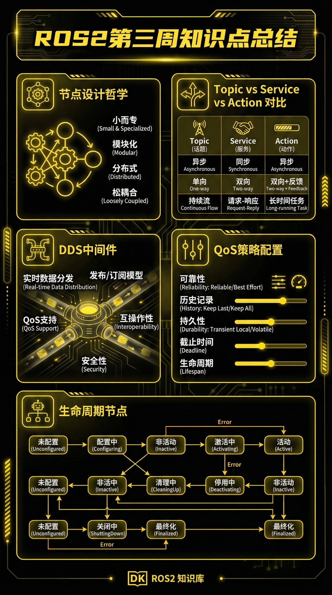

第三周知识点总结
节点设计哲学
每个节点负责单一功能，通过话题/服务通信
解耦、复用、并行执行
Topic vs Service
Topic: 持续数据流
Service: 请求-响应
Action: 带反馈的长时任务
DDS中间件
Data Distribution Service
发布-订阅、实时性保障
QoS策略配置
Reliability / Durability
Deadline / History
按需配置优化性能
生命周期节点
Unconfigured → Inactive → Active → Finalized
确定性启动/关闭
